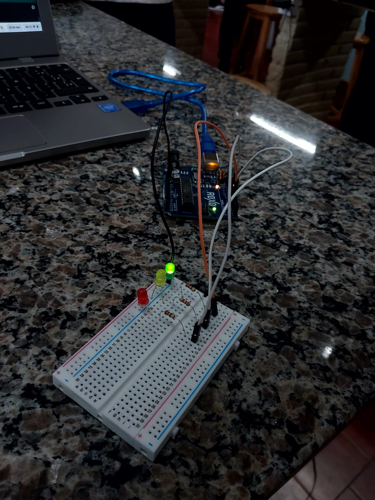

Semáfaro - Cruzamento
Qual a importância de organizarmos o sincronismo de semáforos e o tempo destinado ao cruzamento de estradas?
A seguinte situação: no centro de uma grande cidade o cruzamento de 2 avenidas está causando um grande congestionamento,
são muitos carros que precisam passar por ali diariamente, além de pedestres que também precisam atravessar as avenida de um lado para o outro.
Que tal projetar e programar o protótipo de semáforos de veículos e de pedestre como alternativa para analisar este problema?
Push Button
O push button ou botão de pressão é uma espécie de interruptor de luz utilizado para controlar a passagem de corrente elétrica de um circuito,
através da abertura e fechamento desse.
Da seguinte maneira: ao pressionar o push button, fecha-se o circuito permitindo a passagem da corrente elétrica
e abre seu circuito em pedindo que a corrente passe
Buzzer Passivo
O Buzzer é um componente eletrônico que atua como um mini alto-falante.
Ele é responsável pela emissão de sons de alerta, como aquele que ouvimos quando termina o tempo de aquecimento do micro-ondas.
Há dois tipos de Buzzer: o Ativo e o Passivo uso que já ocorre é o aviso sonoro nos semáforos para pedestres, a iminência da troca de luz e a necessidade de aguardar os carros pararem.
Super Máquina
Hoje conheceremos a Barra Gráfica de LEDs com 10 segmentos. Assim como na série de TV “Super Máquina 80's”, esse tipo de display
é utilizado para realizar sinalizações e mostrar algum tipo de variável através da intensidade luminosa apresentada na barra.
o próprio nome indica, ela é composta por 10 LEDs individuais, sendo que cada LED representa um segmento.